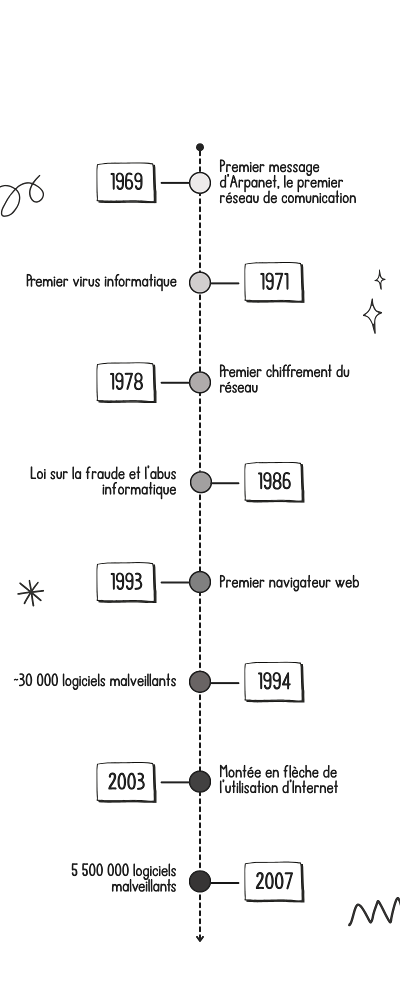
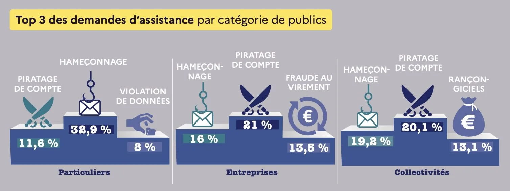
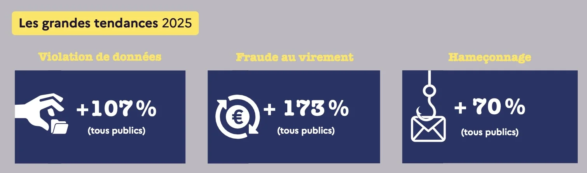

Scénarios d'arnaques Internet, et bonnes pratiques
Historique
Les arnaques en ligne sont un problème aussi vieux qu'Internet lui-même. Avec le temps, elles ont évolué pour s'adapter au monde moderne, mais leur
but n'a pas changé : voler des données personelles à des victimes (coordonnées bancaires, identités...) dans le but de gagner de l'argent.
Avec le temps, des méthodes ont été trouvées pour lutter contre ces arnaques (Voir la section "Détails des arnaques" pour une liste plus exhaustive).
La timeline ci-dessous (datant de 2021) retrace les principales avancées dans le monde des arnaques en ligne :

Quelques chiffres (2025)


Autres chiffres en vrac :
* Les arnaques à l'usurpation du numéro de téléphone ont été multipliées par 6 entre 2024 et 2025
* Les arnaques aux faux sites web ont augmenté de +170%
* Le cyberharcèlement a globalement augmenté de +138%, avec un pic à +200% pour les collectivités et entreprises
Défintions utiles
Détails des arnaques
Un exemple de témoignage
C'est l'histoire d'une personne (Mme A) qui utilisait son ordinateur personnel et qui a cliqué sur un lien. Cela a affiché sur son ordinateur une page web lui expliquant que son ordinateur était infecté et qu'elle devait urgemment appeler un numéro s'affichant sur l'écran pour résoudre le problème.
Elle a appelé et s'est trouvé en communication avec une personne (M. B), à qui elle a expliqué son problème, et qui lui a confirmé que son ordinateur était bien infecté. M. B lui a alors demandé de faire un virement, via PayPal, pour qu'il puisse intervenir sur l'ordinateur. Comme Mme A n'avait pas PayPal, M. B lui a proposé de l'aider à créer un compte, mais elle n'y arrivait pas.
Il lui a alors proposé de prendre la main sur son téléphone, afin de faire la manipulation lui-même. Mme A a accepté, et M. B a ainsi pu créer le compte (en connaissant le mot de passe). Il a ensuite fallu associer le compte PayPal au compte bancaire de Mme A, ce que cette dernière pouvait faire depuis son téléphone, qui était toujours sous le contrôle de M. B.
Ce dernier a ainsi pu voir les codes d'accès de Mme A sur ledit compte bancaire, et faire l'association avec le compte PayPal.
Finalement, la banque de Mme A s'est aperçu d'un comportement étrange de leur cliente, et ont décidé de l'appeler pour vérifier. Heureusement, Mme A avait mit dans ses contacts le numéro de son agence bancaire. Elle a vu le nom de sa banque s'afficher sur son téléphone et a répondu, ce qui lui a permis de se détacher du hacker, qui a raccroché.
Mme A a mis un peu de temps à retrouver son calme. Il lui a aussi fallu supprimer le compte PayPal, et changer ses codes… Son ordinateur n'était pas du tout vérolé.
Développement du site web : Alexandre, Héloïse, Rémi, Arsène Jeu interactif Cellphone : Rémi, Héloïse, Alexandre, Octave Campagne de phishing : Arsène, Octave Hébergement : Arsène Encadrement : Sébastien Canard